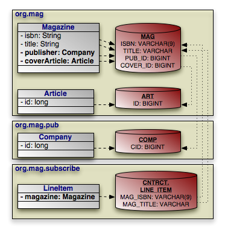

2.13.8.4. Direct Relations
A direct relation is a non-embedded persistent field that holds a reference to another entity. many to one and one to one metadata field types are mapped as direct relations.
Our model has three direct relations: Magazine's publisher field is a direct relation to a Company, Magazine's coverArticle field is a direct relation to Article, and the LineItem.magazine field is a direct relation to a Magazine.
Direct relations are represented in the database by foreign key columns:

You typically map a direct relation with JoinColumn annotations describing how the local foreign key columns join to the primary key columns of the related record.
The JoinColumn annotation exposes the following properties:
-
String name: The name of the foreign key column. Defaults to the relation field name, plus an underscore, plus the name of the referenced primary key column. -
String referencedColumnName: The name of the primary key column being joined to. If there is only one identity field in the related entity class, the join column name defaults to the name of the identity field’s column. -
boolean unique: Whether this column is guaranteed to hold unique values for all rows. Defaults to false.
JoinColumn also has the same nullable , insertable, updatable, columnDefinition, and table properties as the Column annotation.
See Column for details on these properties.
The join-column element represents a join column in XML.
Its attributes mirror the above annotation’s properties:
-
name -
referenced-column-name -
unique -
nullable -
insertable -
updatable -
column-definition -
table
When there are multiple columns involved in the join, as when a LineItem references a Magazine in our model, the JoinColumns annotation allows you to specify an array of JoinColumn values.
In XML, simply list multiple join-column elements.
|
|
OpenJPA supports many non-standard joins. See Non-Standard Joins in the Reference Guide for details. |
package org.mag;
@Table(name="AUTH")
public class Magazine {
@Column(length=9)
@Id private String isbn;
@Id private String title;
@OneToOne
@JoinColumn(name="COVER_ID" referencedColumnName="ID")
private Article coverArticle;
@ManyToOne
@JoinColumn(name="PUB_ID" referencedColumnName="CID")
private Company publisher;
...
}
@Table(name="ART")
public class Article {
@Id private long id;
...
}
package org.mag.pub;
@Table(name="COMP")
public class Company {
@Column(name="CID")
@Id private long id;
...
}
package org.mag.subscribe;
public class Subscription {
...
@Table(name="LINE_ITEM", schema="CNTRCT")
public static class LineItem
extends Contract {
@ManyToOne
@JoinColumns({
@JoinColumn(name="MAG_ISBN" referencedColumnName="ISBN"),
@JoinColumn(name="MAG_TITLE" referencedColumnName="TITLE")
})
private Magazine magazine;
...
}
}The same metadata expressed in XML form:
<entity class="org.mag.Magazine">
<table name="MAG"/>
<id-class="org.mag.Magazine.MagazineId"/>
<attributes>
<id name="isbn">
<column length="9"/>
</id>
<id name="title"/>
<one-to-one name="coverArticle">
<join-column name="COVER_ID" referenced-column-name="ID"/>
</one-to-one>
<many-to-one name="publisher">
<join-column name="PUB_IC" referenced-column-name="CID"/>
</many-to-one>
...
</attributes>
</entity>
<entity class="org.mag.Article">
<table name="ART"/>
<attributes>
<id name="id"/>
...
</attributes>
</entity>
<entity class="org.mag.pub.Company">
<table name="COMP"/>
<attributes>
<id name="id">
<column name="CID"/>
</id>
...
</attributes>
</entity>
<entity class="org.mag.subscribe.Subscription.LineItem">
<table name="LINE_ITEM" schema="CNTRCT"/>
<primary-key-join-column name="ID" referenced-column-name="PK"/>
<attributes>
<many-to-one name="magazine">
<join-column name="MAG_ISBN" referenced-column-name="ISBN"/>
<join-column name="MAG_TITLE" referenced-column-name="TITLE"/>
</many-to-one>
...
</attributes>
</entity>When the entities in a one to one relation join on shared primary key values rather than separate foreign key columns, use the PrimaryKeyJoinColumn(s) annotation or
primary-key-join-column elements in place of JoinColumn(s) / join-column elements.